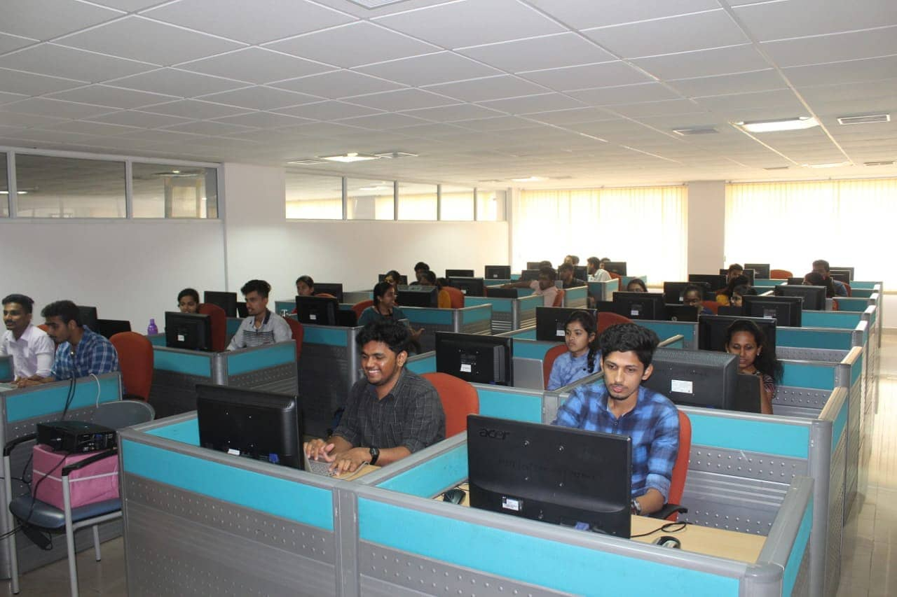
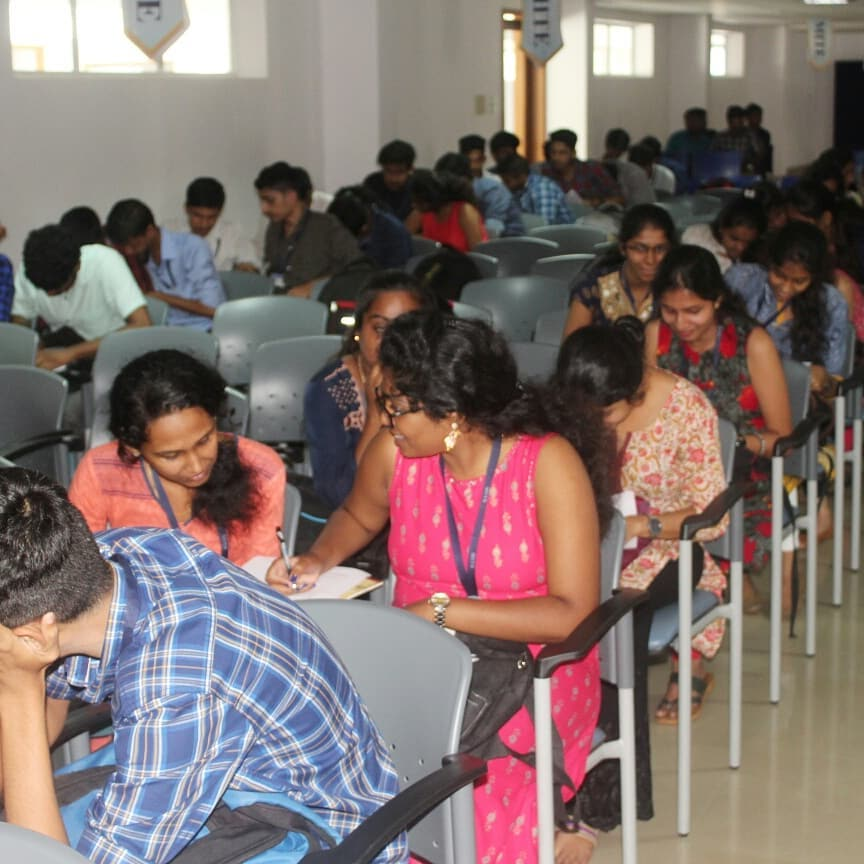
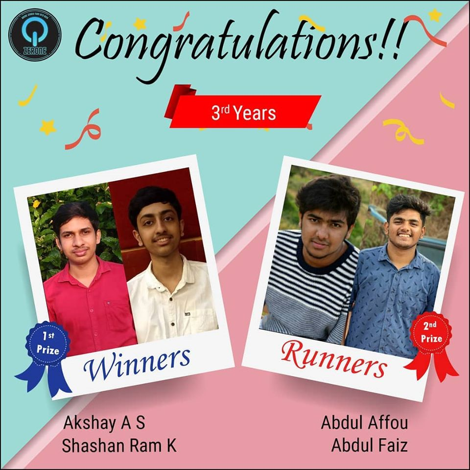
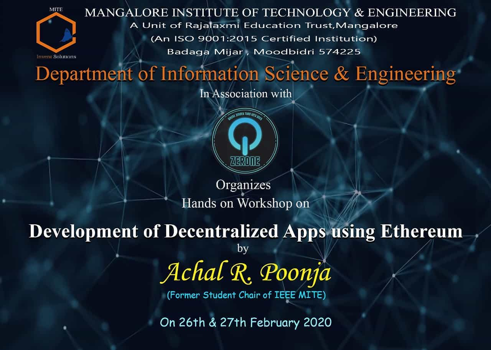
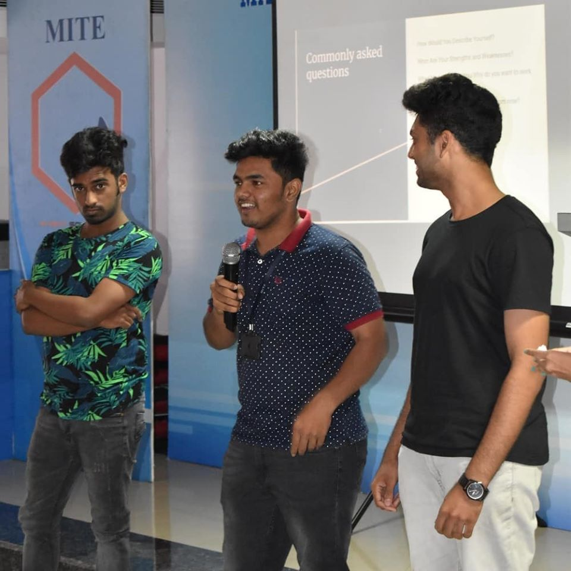

B.E. IN INFORMATION SCIENCE & ENGINEERING
Advances in Computing science is the most important phenomenon of our age, paving way for the development of Information Science as a new foundation for human knowledge. This predictive science can model natural processes, apart from industrial processes. This technology illustrates the massive extent of information science encompassing the farthest reaches of human rationality and ultimate foundations of life. Opportunities exist across a broad range of industries cutting across all sectors of the economy, Business analysis, Consulting, Data warehousing, Support; ERP, E-commerce, Management, Operations, Quality assurance, Training and WEB development. Information Science professionals are among the fastest growing and highest paying jobs in the economy. The course attracts people with interest in developing the skills like Analytical, Mathematical, Managerial, Communication, Creative Problem solving and the Technical Competency. Core Areas of study includes Hardware, Operating systems, Systems Software, Application software, Networking, Programming languages, Design and analysis of algorithms, Decision Support Systems, Database Management, File Structures, ERP and MIS.